Všechno, co jsem čmáral po okrajích sešitu. Vlevo originál, vedle přepis.
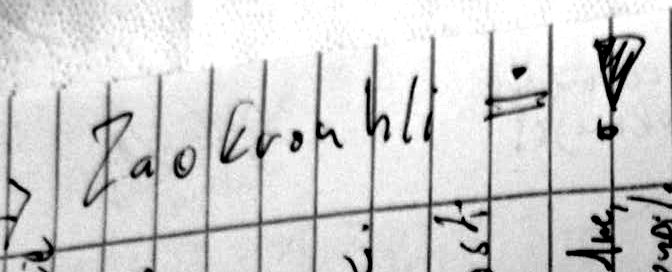
233 °C → zaokrouhli!!
str. 1 · Celsius 233New complain
str. 2 · Celsius 233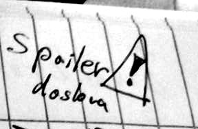
Spoiler alert! ⚠
str. 2 · Celsius 233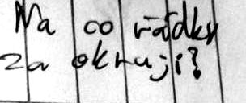
Na co řádky za okraji?
str. 2 · Celsius 233Volné místo.
Chudák strom.
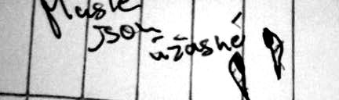
Mušle jsou úžasné
str. 2 · Celsius 233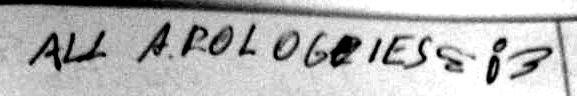
All Apologies );(
str. 3 · Celsius 233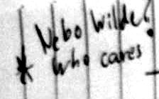
* Nebo Wilde?
Who cares
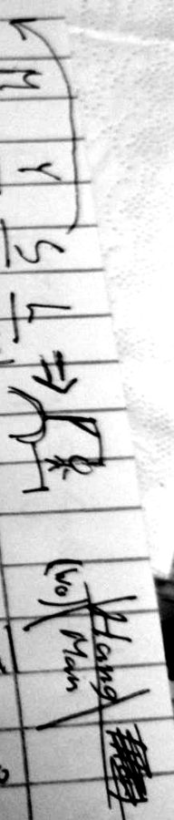
_ M Y S L
smyl / mysl / nemá smysl
/Hang/(Wo)/Man/
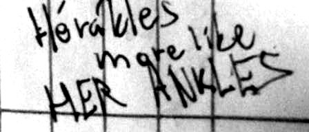
Héraklés?
more like HER ANKLES
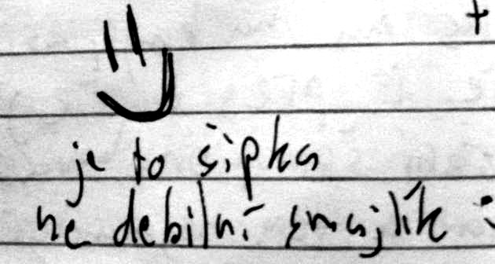
→
je to šipka, ne debilní smajlík :)
Entertain US
str. 1 · Hudební nástroj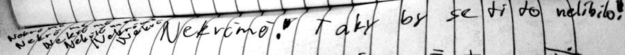
Nekřičme! Nekřičme! Nekřičme!
Taky by se ti to nelíbilo!
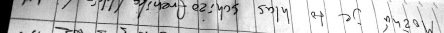
Možná je to hlas schizofrenika / blázna / anděla
str. 1 · Hudební nástroj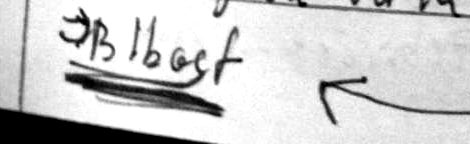
anděl? ← Blbost
str. 1 · Hudební nástroj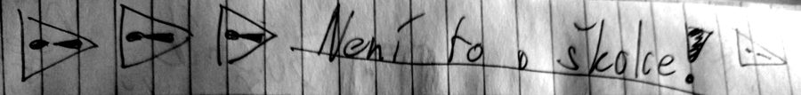
Není to o školce! ⚠ ⚠ ⚠
str. 1 · Kdo podrží Péťu?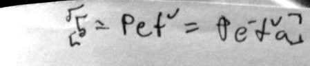
[5] = Pět = Péťa
str. 2 · Kdo podrží Péťu?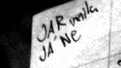
JARmila?
JÁ NE
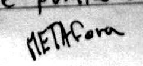
METAfora
str. 1 · Kdo podrží Péťu?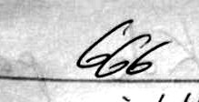
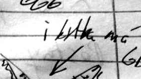
i kytka má GDPR ↙
str. 1 · Šestikráska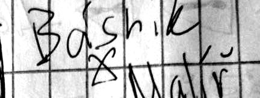
Básník ✗ Malíř
str. 1 · Šestikráska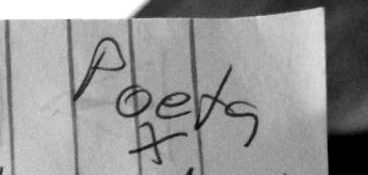
Poeta ✗ Kreslíř
str. 1 · Šestikráska